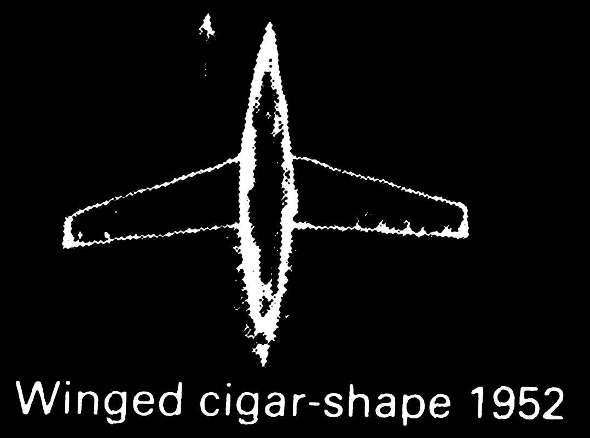
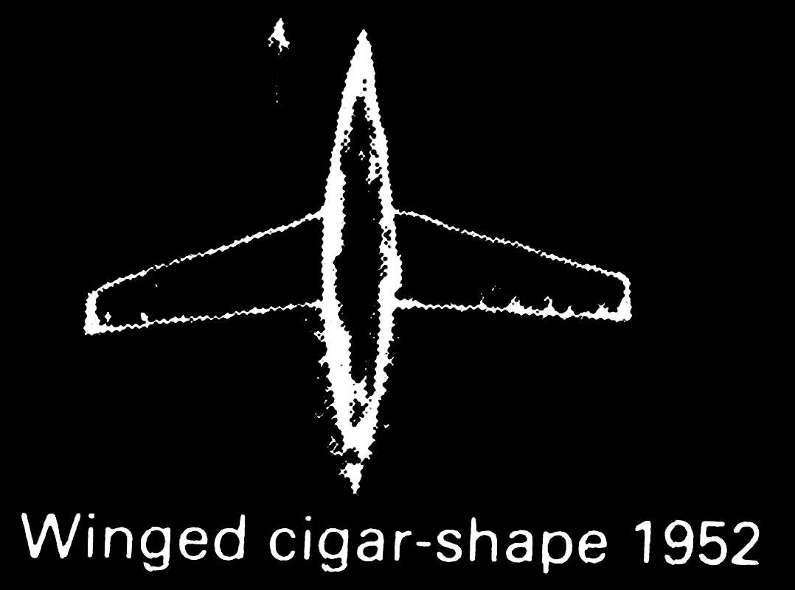

Strange moving lights and some solid bodies in the sky were seen around Otago and elsewhere in New Zealand, and were reported to newspapers.
Thousands of people observed the sun gyrate and descend. This was later reinterpreted by Jacques Vallée, Joaquim Fernandes and Fina d’Armada as a possible UFO sighting, but not recognized as such due to culturaldifferences.
Small metallic spheres and colorful balls of light repeatedly spotted and occasionally photographed worldwide by bomber crews during World War II.
First responders and a Baptist minister allegedly view crashed spacecraft and alien bodies. Military arrives and swears witnesses to silence.
Unidentified aerial objects trigger the firing of thousands of anti-aircraft rounds and raise the wartime alert status.
Numerous UFO sightings were reported over Scandinavia, causing the Swedish Defense Staff to express concern.
Gösta Karlsson reports seeing a flying saucer and its alien passengers. A model of it is now erected at the site.
Harold A. Dahl reported that his dog was killed and his son was injured by debris in an encounter with four to six flying doughnut-shaped objects. He also claimed that a witness was subsequently threatened by the Men in Black.
The UFO sighting that sparked the name flying saucers. This sighting is considered as the start of the “Modern UFO era”.
Several UFO sightings reported after the sighting of Kenneth Arnold.
United States Army Air Forces allegedly captured a crashed flying saucer and its alien occupants. The find was soon explained to be a weather balloon but regained attention since 1978 after investigation of S. T. Friedman.
Objects were reported over several United States military bases; an official investigation followed.
US Air Force sent a fighter pilot to investigate a UFO sighting over Fort Knox, Kentucky; his aircraft crashed and the pilot was killed while pursuing the UFO.
Chiles and Whitted, American commercial pilots, reported that their airplane had nearly collided with a UFO.
A US Air Force pilot sighted and pursued a UFO for 27 minutes over Fargo, North Dakota.
An alleged retrieval of a grounded UFO and its occupants from a plateau in New Mexico.
A farmer took pictures of a purported “flying saucer”. These are among the best known UFO pictures, and continue to be analyzed and debated to this day.
The manager of Great Falls’ pro baseball team took color film of two UFOs flying over Great Falls. The film was extensively analyzed by the US Air Force and several independent investigators.
Several Lights in V-Shaped formations were repeatedly spotted flying over the city. Witnesses included professors from Texas Tech University and photographed by a Texas Tech student.
A series of sightings in July 1952 accompanied radar contacts at three separate airports in the Washington area. The sightings made front-page headlines around the nation, and ultimately lead to the formation of the Robertson Panel by the CIA.
W. Nash and W. Fortenberry, pilots of a DC-4 airliner of Pan American Airways, sighted eight large, round, glowing red objects.
Two pilots saw three unusual Delta wing aircraft flying in a V-formation over Carson Sink.
Six local boys and a woman report seeing a UFO land, and saw a spade-headed creature near the landing site
A UFO appearing as a red glowing light is witnessed by 45 people. The sighting takes place for two nights.
U.S. Air Force pilot and radar operator and their F-89C disappeared while pursuing an unidentified radar return.
Legendary Lockheed aircraft engineer Clarence “Kelly” Johnson, designer of the F-104, U-2, and SR-71, and his wife observed a huge Flying Wing over the Pacific from the ground in Agoura. Meanwhile, one of Johnson’s flight test crews aboard an WV-2 (see EC-121) spotted the craft from Long Beach, California. USAF concluded they had seen a lenticular cloud, even though Johnson considered and ruled out that explanation.
After the sighting of a disc-shaped aircraft a group of strange, goblin-like creatures are reported to have repeatedly approached a farm house and looked inside through the windows. Members of the two families present shot at them several times with little or no effect. The encounter lasted from evening to dawn.
A well-known photo series depicting a supposed UFO, was taken on 24 July near Rosetta in the Drakensberg region. The photographer, meteorologist Elizabeth Klarer, claimed detailed adventures with an alien race, besides having had an alien lover, Akon, who would have fathered her son Ayling.
U.S. Air Force fighter pilot Milton Torres reports that he was ordered to intercept and fire on a UFO displaying “very unusual flight patterns” over East Anglia. Ground radar operators had tracked the object for some time before Torres’ plane was scrambled to intercept.
The crews of 4 fighter-bombers watched a large luminescent UFO and smaller attendant UFOs during a nighttime flight at 25,000 ft.
One of the first abduction claims. Farmer Antonio Vilas Boas claimed to have been abducted and examined by humanoid aliens while working in the fields at night. He also claimed to have had sex with an alien woman aboard the egg-shaped aircraft.
Numerous people describe seeing a glowing, egg-shaped object and a cigar-shaped object which caused their vehicle’s engines to shut down.
9 Separate sightings and 7 photos of UFO’s were reported in the Trinidade Island during the meteorological and geological expeditions in the island.
Mysterious deaths of experienced cross-country skiers in the Urals are due to official investigation believed to have been caused by an unknown “compelling natural force”. Some claim relation to unidentified orange spheres.
A missionary and some natives reported seeing several UFOs, and claimed aliens waved at them from atop a landed UFO that seemed to be under repair. The case was investigated by J. A. Hynek.
The crew of a Pan American flight from Honolulu to San Francisco encountered a UFO at 21,000 feet over the Pacific, and the sighting was confirmed by pilots on two other airlines. Captain George Wilson told reporters “There was an extremely bright light surrounded by small lights” and that the object traveled at “inconceivable” speed, and added “I’m a believer now.”
The first widely publicized alien abduction experience. The Hills saw a huge flying disk while driving home in their car at late evening and were abducted and medically examined by small extraterrestrials.
Police officer Zamora reports a close encounter.
Numerous reports of UFOs in Exeter, New Hampshire.
Peasant Maurice Massé saw a landed spherical object and was paralyzed by two grey alien-like occupants.
Mass sighting of a falling brilliant fireball dropping debris and causing sonic booms, followed by a cordoning-off of the probable crash site, alleged intimidation of a reporter by men in black and cover-up and the unresolved death of said witness.
A wave of reported sightings of a winged humanoid are connected to other mysterious events including sightings of UFOs.
A sighting reported by hundreds of people. Witnesses of “The Clayton Incident” still gather for reunions.
A young brother and sister claimed to have witnessed a brilliant sphere and four small black occupants while herding cattle outside their village.
Widely considered to be the first unusual animal death to be related by its witnesses to UFOs and aliens.
There were other UFO sightings in the area at thetime.
Later U.S. president Jimmy Carter’s sighting of a UFO, which he didn’t believe to be of extraterrestrial origin and is, contrary to him, thought to be Venus.
Seven disc shaped objects hovering in formation around 1500–3000 meters were spotted by the airtraffic controller and two pilots. When fighter pilot Tarmo Tukeva closed in the objects, they accelerated away at incredible speed towards north and were spotted few minutes later by a radar in Vaasa 200 km away. It remains the only UFO sighting officially acknowledged by the Finnish Air Force.
A craft was observed near Fort Beaufort in the eastern Cape, which attracted the attention of the military.
A school headmaster seems to have arrived at a still smouldering UFO landing site in the town of Rosmead.
Two men fishing on the river claimed to be abducted by strange-looking humanoids.
An unidentified object was tracked by a Duke Field radar unit during the same time period, and within the same area, that 10 to 15 people observed four strange objects flying in formation between Milton, Florida, and Crestview, Florida, along Interstate 10, according to Eglin officials. Reports from the base indicated that a bright glowing ball of light could be seen travelling parallel with an Air Force C-130 aircraft but at a much higher altitude.
An alleged UFO crash involving lights in the sky moments before a large impact shock. The cause of the incident was however soon revealed as a 3.5 magnitude earthquake.
A UFO was allegedly sighted in North Hudson Park by a man, George O’Barski, while he was driving home at 2:45 AM.
USAF security personnel reported an unidentified craft flying within exceptionally secure Strategic Air Command airspace over a B-52 base housing nuclear weapons and delivery systems. An incoming KC-135 tanker was later ordered to commence pursuit over Lake Huron. The object or objects, last seen back over the base’s weapons storage area, were never identified.
Logger Travis Walton reports being abducted by aliens for five days. Walton’s six workmates claimed to have witnessed a bright hovering large silvery disk and fled the scene leaving him lying on the ground. He reappeared on 11-10 at late evening in Heber-Overgaard. Walton described the event and its aftermath in the book The Walton Experience (1978), which was dramatized in the film Fire in the Sky (1993) (with the scenes aboard the extraterrestrials’ vessel significantly changed).
Four campers claimed to have been abducted by alien beings in the Allagash wilderness.
A very bright object similar to a star was seen from Shemiran; after each approach to the UFO the electronic equipment of two F-4 interceptor aircraft of the Imperial Iranian Air Force was disabled, along with ground control equipment in Mehrabad International Airport, an event thoroughly documented in the U.S. DIA report. The Iranian generals involved in the incident claimed the object was extraterrestrial.
Claims of UFOs on a river island investigated by the air force in “Operação Prato” and civilian researchers, among them J. F. Vallée.
In the 1970s, the area was the scene of alleged UFO sightings and nicknamed the Broad Haven Triangle.
A farmer in Emilcin is said to have been abducted and medically examined by short, green-faced, humanoid entities speaking an unearthly language in a white, hovering, humming craft. There is now a memorial at the site.
Contacting air traffic control, an Australian pilot reported seeing a UFO before both he and his aircraft vanished.
A series of sightings by a Safe Air freight plane over two nights. The airplane was escorted by lights that changed color and size. The lights were tracked by ground and air radar, and filmed in the air by a TV crew.
A deputy sheriff spotted a bright light which appeared to have collided with his patrol car and damaged it. The deputy also suffered temporary retinal damage from the “light”.
Forester, Bob Taylor, was pulled by two spiked globes towards a large spheroid object, which hovered on a clearing. He lost consciousness and afterwards had trouble walking and speaking. He was also constantly thirsty for several days.
Three large UFOs forced a commercial flight to make an emergency landing at Manises Airport.
Interception of alleged UFO by Sukhoi Su-22. The UFO was spherical and around three miles from the base, and around 600 metres (2,000 ft) above the ground. The pilot followed the object to an altitude of around 2,500 metres (8,200 ft), and aimed his weapons at the UFO, firing sixty four 30mm shells. The pilot followed the object up to around 19,000 metres (63,000 ft) feet, when he was able to have a much closer look at the object from around 100 metres, noticing that it was around thirty feet in diameter and had an enamelled cream colour, with a wide circular silver base; similar to an incandescent lightbulb, but with a much wider base. The object had no visible exhaust or obvious means of propulsion. The pilot then broke off the engagement.
A sighting by USAF personnel, which at first appeared to be a downed aircraft.
A huge diamond-shaped object expelling flame and emitting heat irradiated three witnesses on an isolated road in dense woods; all required treatment for radiation poisoning. The UFO was escorted by military helicopters including CH-47 Chinooks. The victims have since sued the United States Government.
Retired contractor Renato Nicolai said he saw a flying object shaped like two inverted bowls that left circular traces on the grass.
A wave of reported UFO sightings in the Hudson Valley which ran until 1987, peaking in 1983-84.
Author Whitley Strieber claims he was abducted by aliens while at his cabin in upstate New York.
The inhabitants of the town watched a reddish ball which crashed into a mount known as Height 611. According some ufologists there was a UFO crash.
Brazilian Air Force allegedly detected and tried to intercept UFOs in southeastern Brazil. Various “brilliant lights” were reported by flight controller, civil and fighter pilots, confirmed by radar’s detection and its operators at the same night, during over 5 hours.
First two square-shaped, then one very large craft witnessed by the crew flew alongside Japan Air Lines Flight 1628 for 50 minutes above Alaska. One of the objects trailing the Boeing 747 was detected by military radar.
Ed Walters, a building contractor claimed to see a UFO and take photos of it.
A group of youths claimed to have seen a UFO and a “three eyed alien”.
Reports of large, silent, low-flying black triangles, allegedly investigated by Belgium’s military.
At 8,30 p.m. many people saw a group of 7 luminous spheres in the sky. The spheres formed a Y and were witnessed for about 30 minutes. Photographic evidence exists.
Video taken during mission STS-48 shows a flash of light and several objects, apparently flying in an artificial or controlled fashion. NASA explained them as ice particles reacting to engine jets.
Brazilian Armed Forces allegedly captured extraterrestrial being after an UFO crash. The Brazilian government has officially denied these claims. According to a military inquest, a local man with disabilities was mistaken for an alien.
Pilot observes a UFO emerge from a mother craft.
Lights and craft of varying descriptions, most notably a V-shaped pattern, were seen by thousands of people between 19:30 and 22:30 MST, in a space of about 300 miles, from the Nevada line, through Phoenix, to the edge of Tucson.
A drug-smuggling air-patrol recorded on infrared camera what some claimed to be UFOs. The footage was released by Jaime Maussan. The objects were however convincingly correlated with the burn-off flares of oil platforms.
Cmdr. David Fravor and Lt. Cmdr. Jim Slaight from VFA-41 squadron flying Super Hornet on a routine training mission, when a controller from USS Princeton informed them about an unidentified flying object nearby. When the fighter pilots encountered the object, it was described as “40-feet long and shaped like a Tic tac”. The object flying at random pattern, appearing at 80,000 ft, and then dived to 20,000 ft at “incredible speed”. The object later descended to 50 ft above the water, causing the sea to churn. When the fighter plane approaching the object, it suddenly came to the plane head-on before peeling away. Although the fighter pilots were no longer able to detect the object, the radar controller at USS Princeton was able to detect its presence for a few minutes before disappearing. The Super Hornet later returning to USS Nimitz.
United Airlines employees and pilots claimed sightings of a saucer-shaped, unlit craft hovering over a Chicago O’Hare Airport terminal, before shooting up vertically.
Two airline pilots on separate flights spot UFOs off the coast of Alderney.
The Dudley Dorito sightings concerns multiple sightings of a black triangle over the West Midlands conurbation of the United Kingdom which began in November 2007. The phrase was coined by the local press after hearing witness descriptions of the object.
UFOs were sighted over a three county area during a four-hour period of time and included over 20 witnesses. Radar data was obtained that correlated to some of the witness observations. The Air Force was doing training exercises in the Brownwood Military Operating Area during this event and their aircraft were identified on radar independent of the UFO.
According to media reports, a police helicopter was almost hit by a UFO, before it tried to pursue it. Hundreds of people reported to have witnessed a UFO on the same or preceding days, from different areas of Wales.
In the evening, many citizens in Morristown and other town in Morris County, New Jersey saw five red lights in the sky. After three months, two men from the Morristown area announced they had organized an UFO hoax, meant as a “social experiment”.
A large, circular spinning white light, trailed by a long blue tail over the skies of Norway was spotted by thousands for two minutes around 8:45 am on December 9. The Norwegian media and space center were swamped with calls, and the phenomenon was held to be anything from a UFO to a unique aurora borealis event. The following day Russian authorities confirmed a failed Bulava launch, explaining the anomaly.
At least three UFOs were spotted over Harbour Mille. The objects looked like missiles but emitted no noise.
 
